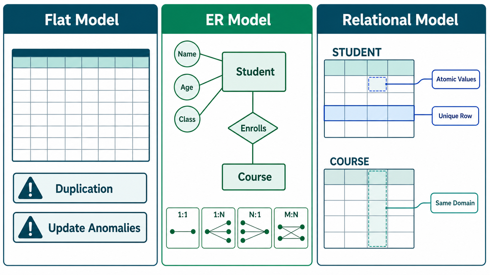
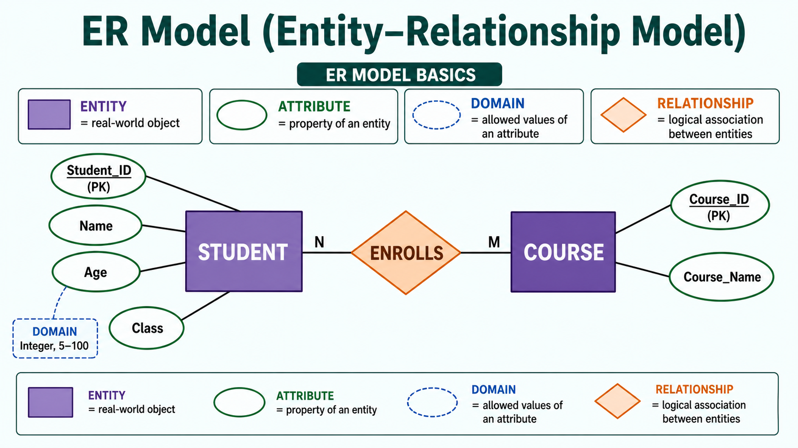
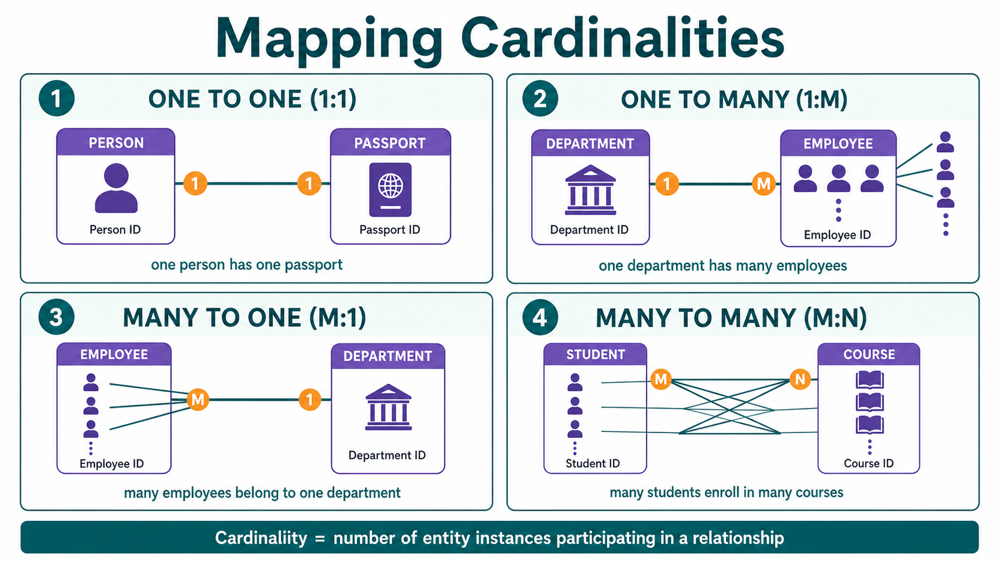
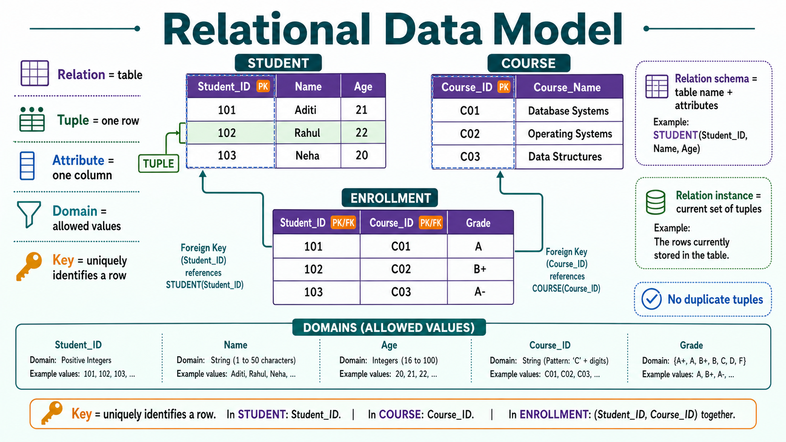

Excellent! This chapter is one of the highest-weightage topics in IBPS SO IT DBMS. Questions are frequently asked on:
- Data Models
- ER Model
- Entity
- Attribute
- Relationship
- Cardinality
- Relational Model
- Atomic Values
I'll explain every line in simple language with examples and exam tricks.
DBMS - Data Models
What is a Data Model?
Book says:
Data models define how the logical structure of a database is modeled.
Simple Meaning
A Data Model is a blueprint (design) that tells us:
- How data should be stored
- How data should be connected
- How data should be organized
- How data should be retrieved
Real-Life Example
Suppose you're building a new school.
Before constructing it, you prepare a blueprint.
It decides:
- Where classrooms will be
- Where the library will be
- Where the playground will be
Similarly,
Before creating a database, we decide
- Which tables are needed?
- Which columns?
- How are tables related?
That plan is called the Data Model.
Definition
A Data Model defines the logical structure of a database.
Think of it as
Data Model
↓
How data will be stored
How data will be related
How data will be processedWhy do we need Data Models?
Imagine you start creating tables randomly.
Student
Teacher
Course
Library
FeesNo relationships.
No planning.
Everything becomes messy.
A Data Model helps organize everything properly.
Book says
Data Models are fundamental entities to introduce abstraction.
What is Abstraction?
Abstraction means
Hide unnecessary details and show only important details.
Example
When you use WhatsApp
You only see
- Chats
- Buttons
- Calls
You don't see
- SQL Queries
- Database Tables
- Indexes
These technical details are hidden.
This is called Abstraction.
Data Model defines
Book says
Data Model tells
- How data is connected
- How data is processed
- How data is stored
Let's understand.
1. How data is connected
Example
Student
↓
Enrolls in
↓
Course
Student and Course are connected.
2. How data is stored
Should we store
Student Nameor
Student IDShould we make
Separate tables?
Same table?
Data Model decides.
3. How data is processed
Example
When teacher searches
RahulData Model helps DBMS know
where to search.
Flat Data Model
Book says
The first data model was Flat Data Model.
What is Flat Data Model?
Everything was stored
inside one single table.
Example
| Roll | Name | Course | Teacher | Department |
|---|---|---|---|---|
| 1 | Rahul | DBMS | Amit | IT |
| 2 | Aman | DBMS | Amit | IT |
| 3 | Neha | DBMS | Amit | IT |
Everything in one place.
Problem
Notice
Teacher
Amit
Amit
AmitDepartment
IT
IT
ITRepeated many times.
This is called
Redundancy.
Book says
Flat Model introduces
Update Anomalies.
What does that mean?
Suppose
Teacher changes
from
Amitto
RohitYou must update
every row.
If one row is forgotten
Database becomes inconsistent.
This is called
Update Anomaly.

ER Model (Entity-Relationship Model)

One of the most important topics.
⭐⭐⭐⭐⭐
IBPS Favorite.
What is ER Model?
Book says
It is based on
Real-world entities
and
Relationships.
Simple Meaning
ER Model is a way of designing a database using
- Entities
- Attributes
- Relationships
before actually creating tables.
Think of it as a rough blueprint of the database.
Why use ER Model?
Suppose a college wants a database.
Before creating tables,
they first decide
Student
Teacher
Course
LibraryThen they connect them.
This planning is done using the ER Model.
ER Model is used for
Book says
Conceptual Design.
What is Conceptual Design?
Imagine building a house.
First
you draw
Bedroom
Kitchen
BathroomOnly after planning,
construction begins.
Similarly
ER Model is used
before database implementation.
Components of ER Model
There are only 3 main components.
- Entity
- Attribute
- Relationship
1. Entity
Book says
Entity is a real-world object.
Simple Meaning
Anything that exists independently
can be an Entity.
Examples
Student
Teacher
Employee
Car
Book
Customer
Hospital
Bank Account
All are entities.
Example
College Database
Entities
Student
Teacher
CourseRemember
Entity = Noun
2. Attribute
Book says
Properties of Entity.
Example
Entity
StudentAttributes
Roll Number
Name
Age
Phone Number
AddressDiagram
Student
/ | \
Name Age Roll NoEasy Trick
Entity = Person
Attributes = Details of person
Domain
Book mentions
Every attribute has a Domain.
What is Domain?
Domain means
Allowed values.
Example
Age
Allowed
1
2
20
35
100Not Allowed
ABC
RahulBecause Age must be a number.
Another Example
Gender
Allowed
Male
Female
OtherThese allowed values form the Domain.
3. Relationship
Book says
Logical association among entities.
Simple Meaning
Relationship means
Connection between entities.
Example
Student
Studies
Course
Diagram
Student
|
Studies
|
CourseAnother Example
Employee
Works For
Company
Easy Trick
Relationship = Verb
Examples
Studies
Works
Teaches
Owns
Purchases
Mapping Cardinality

Very Important
⭐⭐⭐⭐⭐
IBPS asks this directly.
What is Cardinality?
Cardinality tells
How many entities are connected with each other.
Think of it as answering the question:
"How many?"
There are four types.
1. One-to-One (1:1)
One person
has
One Passport.
Diagram
Person -------- PassportOne Person
↓
One Passport
One Passport
↓
One Person
Other Examples
Person ↔ Aadhaar
Employee ↔ Locker
2. One-to-Many (1:M)
One Teacher
teaches
Many Students.
Diagram
Teacher
|
-------------------
Student
Student
StudentExamples
One Department
↓
Many Employees
One Customer
↓
Many Orders
3. Many-to-One (M:1)
Opposite of previous.
Many Students
belong to
One Class.
Diagram
Student
Student
Student
|
ClassMany Employees
↓
One Department
4. Many-to-Many (M:N)
Most common.
Many Students
study
Many Courses.
Diagram
Student A
Student B
Student C
|
--------------------
Course 1
Course 2
Course 3One student
studies many courses.
One course
has many students.
Easy Trick
| Cardinality | Example |
|---|---|
| 1 : 1 | Person → Passport |
| 1 : M | Teacher → Students |
| M : 1 | Students → Class |
| M : N | Students ↔ Courses |
Relational Model

This is the most important Data Model.
Almost every database today uses it.
Examples
- MySQL
- Oracle
- PostgreSQL
- SQL Server
All are based on the Relational Model.
Book says
Most popular model.
Why?
Because
Everything is stored as tables.
Example
Student Table
| ID | Name | Age |
|---|---|---|
| 1 | Rahul | 20 |
Course Table
| ID | Course |
|---|---|
| 101 | DBMS |
Important Point
Book says
Tables are called
Relations
This is very important.
In Relational Model
| Word | Means |
|---|---|
| Relation | Table |
| Tuple | Row |
| Attribute | Column |
IBPS asks this.
Normalization
Book says
Relations can be normalized.
Meaning
Duplicate data is removed.
Example
Before
| Student | Department |
|---|---|
| Rahul | IT |
| Aman | IT |
After Normalization
Student Table
| Student | DeptID |
|---|---|
| Rahul | 1 |
Department Table
| DeptID | Department |
|---|---|
| 1 | IT |
Redundancy removed.
Atomic Values
Book says
Each value must be atomic.
What is Atomic?
Atomic means
Cannot be divided further.
Correct
| Name |
|---|
| Rahul |
Wrong
| Phone |
|---|
| 9876543210, 9123456789 |
Two phone numbers in one column.
Not atomic.
Correct
| Phone |
|---|
| 9876543210 |
| Phone |
|---|
| 9123456789 |
IBPS Trick
Atomic = Single Value
Each Row Contains Unique Value
Book says
Every row must be unique.
Example
Correct
| Roll | Name |
|---|---|
| 1 | Rahul |
| 2 | Aman |
Wrong
| Roll | Name |
|---|---|
| 1 | Rahul |
| 1 | Aman |
Roll Number repeated.
Violation.
Each Column Contains Same Domain
Book says
All values in one column should belong to the same domain (same type of allowed values).
Correct
| Age |
|---|
| 20 |
| 21 |
| 19 |
Wrong
| Age |
|---|
| 20 |
| Rahul |
| Delhi |
Age column should contain only age values.
Complete Flow of ER Model
Real World
↓
Identify Entities
↓
Identify Attributes
↓
Identify Relationships
↓
Create ER Diagram
↓
Convert into Tables
↓
Relational DatabaseDifference Between ER Model and Relational Model
| ER Model | Relational Model |
|---|---|
| Used before database creation | Used after database design |
| Conceptual model | Logical model |
| Uses Entities & Relationships | Uses Tables |
| Helps in planning | Stores actual data |
| Blueprint of database | Actual implementation |
⭐ IBPS SO IT Quick Revision
| Topic | Remember |
|---|---|
| Data Model | Blueprint of database |
| Flat Data Model | Everything stored in one table; high redundancy |
| ER Model | Conceptual design using Entities, Attributes, Relationships |
| Entity | Real-world object |
| Attribute | Property of an entity |
| Domain | Allowed values of an attribute |
| Relationship | Connection between entities |
| Cardinality | Number of entities participating in a relationship |
| 1:1 | Person → Passport |
| 1:M | Teacher → Students |
| M:1 | Students → Department |
| M:N | Students ↔ Courses |
| Relational Model | Data stored in tables (relations) |
| Relation | Table |
| Tuple | Row |
| Attribute | Column |
| Atomic Value | Single indivisible value |
| Normalization | Removes redundancy |
🎯 IBPS SO IT Frequently Asked Questions
- What is the most popular data model?
✅ Relational Model
- Which model is used for conceptual database design?
✅ ER Model
- What is an Entity?
✅ A real-world object.
- What is an Attribute?
✅ A property of an entity.
- What is a Domain?
✅ The set of allowed values for an attribute.
- What is Cardinality?
✅ It defines how many entities can be associated in a relationship.
- What is a Relation in the Relational Model?
✅ A Table.
- What is a Tuple?
✅ A Row.
- What does Atomic mean in the Relational Model?
✅ Each field contains a single, indivisible value.
These concepts form the base for the next topics: ER Diagrams, Keys, Constraints, Functional Dependencies, and Normalization, which are all important for IBPS SO IT.